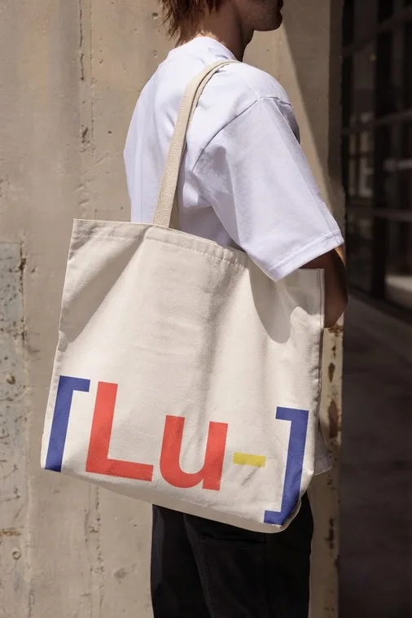
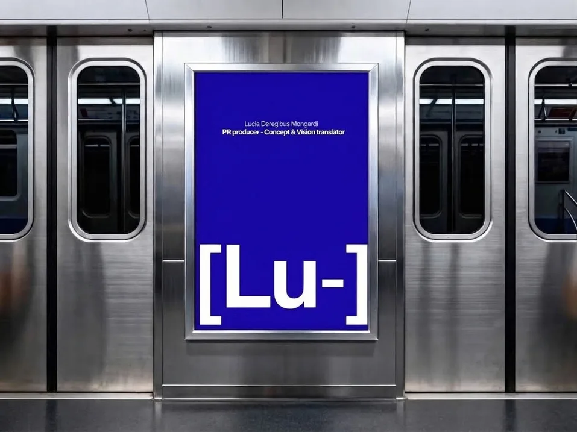
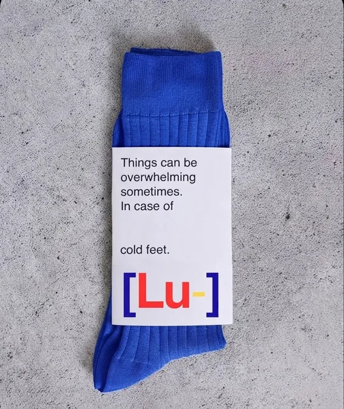

Volver a lo básico.
Parto de formas, colores, planos y signos simples para construir algo que no lo sea tanto. Me interesa esa contradicción: cuanto más básico es el recurso, más espacio tengo para interpretarlo.



Yo soy mi nombre. Soy Lucía. Parece obvio, pero justamente por eso me gusta.

PR producer y Concept & Vision translator. Traduzco ideas a cosas que existen: sesiones, eventos, films, marcas.
Estudio Diseño y Gestión de Estéticas para la Moda, con un minor en Relaciones Públicas e Institucionales. Vengo de la producción de eventos y de la experiencia del cliente, que es una forma elegante de decir que sé qué pasa cuando algo sale mal y cómo hacer que no se note.
¿Por qué nunca me alcanza con la primera vista de las cosas? No tengo una respuesta útil. Tengo un método: volver a las bases.
Lo evidente me interesa demasiado. Nada me alcanza ni me cierra del todo. Volvamos a las bases, porque ahí, por alguna razón bastante sospechosa, suele empezar todo.
Yo soy mi nombre, soy Lucía, parece obvio pero justamente por eso me gusta. Porque todos lo dan por hecho y yo lo hice un nuevo discurso. A partir de ahí me pregunté, ¿por qué nunca me alcanza con la primera vista de las cosas? Y, como la ironía me destaca, no me respondí nada útil.
Lo evidente me interesa demasiado. No por rebeldía estética, sino porque ya lo dan por hecho y eso lo hace interesante. Nada me alcanza ni me cierra del todo. Y no, no es una frase linda. Es más bien un problema de fábrica.
Quiero equivocarme con estilo o sin él. Encontrar preguntas mejores que las anteriores y seguir mirando donde aparentemente no hay nada que mirar. Volvamos a las bases, porque ahí, por alguna razón bastante sospechosa, suele empezar todo.
Parto de formas, colores, planos y signos simples para construir algo que no lo sea tanto. Me interesa esa contradicción: cuanto más básico es el recurso, más espacio tengo para interpretarlo.
No busco diferenciarme agregando complejidad, sino interviniendo lo evidente. Tomo elementos que todos reconocemos y los desplazo apenas para generar una segunda lectura.
Color, tipografía, signos, planos y composición funcionan como un mismo lenguaje. Construyo algo complejo a partir de recursos simples. Ahí está la ironía del sistema: volver a las bases para llegar a un lugar menos básico.
C O N T A C T M E .
¿Hablamos? Prometo una segunda lectura.